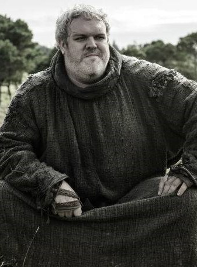
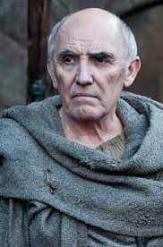

Invernalia, construida hace 8.000 años por Brandon el Constructor, es el asentamiento ancestral de la Casa Stark. Considerada como la capital del Norte, se localiza en el centro de la provincia norteña de los Siete Reinos, cerca del Camino Real que conduce a Desembarco del Rey.
Casa Stark
Lema: Se acerca el invierno (Winter is coming)
Ubicación: Winterfell (Invernalia)

La familia Stark gobernó en el Norte durante miles de años antes, extendiéndose su linaje hasta los Primeros Hombres. Tras el ascenso al poder de los Targaryens y su conquista de los Siete Reinos, los miembros de la Casa Stark fueron nombrados Señores de Invernalia y Guardianes del Norte. Varios miembros de la generación actual de los Stark poseen la habilidad de "poseer" a sus lobos huargo, dándoles la capacidad de experimentar los sentimientos de estos animales y de ver a través de su ojos.

Eddar (Ned) Stark: Patriarca, Señor de Invernalia, Guardían del Norte, Mano del Rey Robert I. Pese a que había prometido ser clemente, Joffrey le ordena a Ser Ilyn Payne que ejecute a Lord Stark con su propio mandoble, Hielo. La ejecución es presenciada tanto por Sansa como por Arya.

Catelyn Tully: Esposa de Ned, mujer fuerte, honorable y con un profundo amor por su familia. Fue asesinada a traición por los Frey en la boda roja.

Robb Stark: Hijo mayor de Ned y Catelyn, heredero de Invernalia. La ejecución de Ned Stark causa que su hijo Robb sea proclamado Rey en el Norte por sus señores vasallos. Es asesinado por Roose Bolton en la boda roja, lo decapitan y sustituyen su cabeza por la de su lobo huargo.

Sansa Stark: Es representada como la ingenua y soñadora hija mayor de Eddard Stark y Catelyn. A pesar de haber estado en dos matrimonios que ella nunca quiso, logró sobrevivir a ellos, declara que el Norte se mantendrá como un reino independiente, a lo que Bran accede. De esta manera, Sansa es coronada como la Reina del Norte.

Arya Stark: Independiente, ingeniosa y de fuerte carácter pese a su corta edad. Comenzó como una pequeña niña que mostró habilidades en el manejo de la espada y siguió hasta convertirse en una despiadada guerrera que casi se convierte en una 'mujer sin rostro', pero decidió mantener su nombre para tachar a todos los personajes de su 'Lista de la muerte'. El Rey de la Noche intenta asesinar a Arya pero ella lo mata con su daga de acero de valyrio. Al final, ella decide explorar y navegar hacia lo desconocido

Es representado como el segundo hijo de Eddard Stark, Señor de Invernalia. Tras sufrir una caída de una torre a manos de Jaime Lannister, Bran queda parapléjico y tiempo después comienza a experimentar visiones y extraños sueños que le guiarán en un viaje hacia el norte para encontrar al «cuervo de tres ojos». Es escogido por un Consejo de señores y señoras de Poniente como el nuevo rey de los 6 reinos apoyado por Tyrion Lannister.

Rickon Stark: El hijo menor de Lord Eddard Stark y Lady Catelyn Tully. Es asesinado por Ramsay Bolton en la batalla de los bastardos.

Jon Snow: Nacido bajo el nombre de Aegon Targaryen, es el hijo de Lyanna Stark y el príncipe Rhaegar Targaryen, difunto Príncipe de Rocadragón. Desde su infancia, Jon fue criado como el hijo bastardo de Lord Eddard Stark, el hermano de Lyanna, junto a sus hijos legítimos en Invernalia. Se convierte el Lord Comandante de la Guardia de la Noche nº 998 luego de unirse a la Guardia de la Noche. Jon Snow se exilió con el resto de los Hombres Libres, tras el regicidio de Daenerys Targeryen. Para evitar su ejecución, pero para no dejarlo impune, se le exilia más allá del Muro

Lyanna Stark: Estuvo prometida a Robert Baratheon. Se casó en secreto con el príncipe Rhaegar Targaryen, a quien dio un hijo. Lyanna, antes de morir, le dice a Ned que el verdadero nombre de Jon es "Aegon Targaryen"

Hodor: Hombre alto de entendimiento lento, pero gentil y leal a la familia Stark. Sólo es capaz de decir una sola palabra, "Hodor". Se sacrifica para que Bran y Meera pudieran escapar del ejército de los white walkers.

Luwin fue el maestre de Invernalia, sirviendo a la Casa Stark como consejero, curandero y Castellano. Ayudó en el nacimiento de los cinco hijos de Lord Eddard Stark y Lady Catelyn Tully. Es herido por una lanza cuando Theon traiciona a la familia Stark. Osha es quien decide acabar con su vida para que no continúe sufriendo.

Ser Rodrik Cassel fue el maestro de armas y castellano de Invernalia. Es asesinado por los traidores junto con la mayoría de sus comandantes.